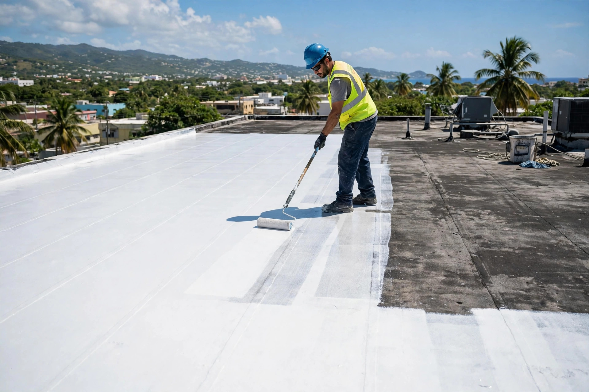
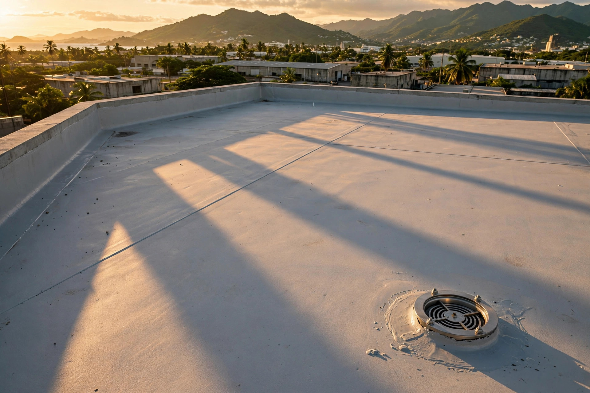

AOH Contractors Inc. • Manatí, Puerto Rico
Sellado e impermeabilización de techos con acabado premium. Estamos en Ext. O’Neill, Manatí, y servimos el área norte.
También: 787-444-0408
Nuestro trabajo
Trabajos reales de sellado: aplicación, acabado y detalle profesional.


Servicios
Ext. O’Neill, Manatí — servimos el área norte
Aplicación profesional de sistemas de sellado para techos residenciales y comerciales.
Membranas y tratamientos que bloquean la humedad desde la primera capa.
Corrección de grietas, juntas y puntos débiles antes del sellado final.
Limpieza y mantenimiento para alargar la vida útil de tu techo.
Cómo trabajamos
Visitamos tu propiedad, medimos el techo y detectamos filtraciones sin costo.
Te damos precio fijo y alcance claro del trabajo antes de empezar.
Limpieza a presión, reparación de grietas y preparación de superficie.
Aplicación del sistema de sellado con garantía escrita.
Preguntas frecuentes
Estamos en Ext. O’Neill, en Manatí, Puerto Rico, cerca de Blas Auto Design.
Servimos Manatí y el área norte. Escríbenos por WhatsApp y confirmamos cobertura para tu pueblo.
Depende del sistema usado, la condición del techo y el mantenimiento. Te orientamos según tu caso cuando inspeccionemos tu techo.
Sí. Primero corregimos grietas, juntas y puntos débiles, y luego aplicamos el sellado para una protección completa.
Por WhatsApp o llamando al 787-242-3095 o al 787-444-0408.
Esta página la creó ManuPro. Escríbenos hoy mismo y cotiza la website profesional de tu negocio.
Cotizar por WhatsAppExt. O’Neill, Manatí — servimos el área norte · 787-242-3095
Cotizar ahora